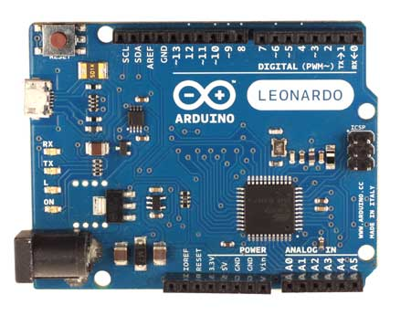
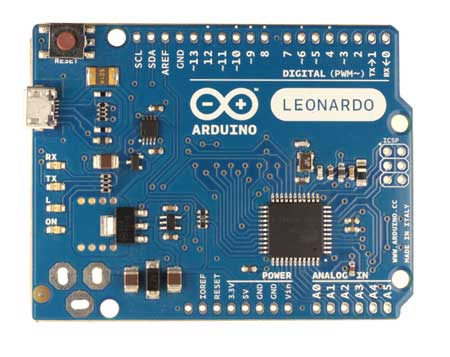

Arduino Leonardo
|  | |
| Arduino Leonardo Front with headers | Arduino Leonardo Rear |
{kind=link}
{kind=link}
|  |
| Arduino Leonardo Front without headers |
{kind=link}
with headers
 | w/o headers
| 
|
Overview
The Arduino Leonardo is a microcontroller board based on the ATmega32u4 (datasheet). It has 20 digital input/output pins (of which 7 can be used as PWM outputs and 12 as analog inputs), a 16 MHz crystal oscillator, a micro USB connection, a power jack, an ICSP header, and a reset button. It contains everything needed to support the microcontroller; simply connect it to a computer with a USB cable or power it with a AC-to-DC adapter or battery to get started.
The Leonardo differs from all preceding boards in that the ATmega32u4 has built-in USB communication, eliminating the need for a secondary processor. This allows the Leonardo to appear to a connected computer as a mouse and keyboard, in addition to a virtual (CDC) serial / COM port. It also has other implications for the behavior of the board; these are detailed on the getting started page.
Summary
| Microcontroller | ATmega32u4 |
| Operating Voltage | 5V |
| Input Voltage (recommended) | 7-12V |
| Input Voltage (limits) | 6-20V |
| Digital I/O Pins | 20 |
| PWM Channels | 7 |
| Analog Input Channels | 12 |
| DC Current per I/O Pin | 40 mA |
| DC Current for 3.3V Pin | 50 mA |
| Flash Memory | 32 KB (ATmega32u4) of which 4 KB used by bootloader |
| SRAM | 2.5 KB (ATmega32u4) |
| EEPROM | 1 KB (ATmega32u4) |
| Clock Speed | 16 MHz |
Schematic & Reference Design
EAGLE files: arduino-leonardo-reference-design.zip
Schematic: arduino-leonardo-schematic-rev3b.pdf
Power
The Arduino Leonardo can be powered via the micro USB connection or with an external power supply. The power source is selected automatically.
External (non-USB) power can come either from an AC-to-DC adapter (wall-wart) or battery. The adapter can be connected by plugging a 2.1mm center-positive plug into the board's power jack. Leads from a battery can be inserted in the Gnd and Vin pin headers of the POWER connector.
The board can operate on an external supply of 6 to 20 volts. If supplied with less than 7V, however, the 5V pin may supply less than five volts and the board may be unstable. If using more than 12V, the voltage regulator may overheat and damage the board. The recommended range is 7 to 12 volts.
The power pins are as follows:
- VIN. The input voltage to the Arduino board when it's using an external power source (as opposed to 5 volts from the USB connection or other regulated power source). You can supply voltage through this pin, or, if supplying voltage via the power jack, access it through this pin.
- 5V. The regulated power supply used to power the microcontroller and other components on the board. This can come either from VIN via an on-board regulator, or be supplied by USB or another regulated 5V supply.
- 3V3. A 3.3 volt supply generated by the on-board regulator. Maximum current draw is 50 mA.
- GND. Ground pins.
- IOREF. The voltage at which the i/o pins of the board are operating (i.e. VCC for the board). This is 5V on the Leonardo.
Memory
The ATmega32u4 has 32 KB (with 4 KB used for the bootloader). It also has 2.5 KB of SRAM and 1 KB of EEPROM (which can be read and written with the EEPROM library).
Input and Output
Each of the 20 digital i/o pins on the Uno can be used as an input or output, using pinMode(), digitalWrite(), and digitalRead() functions. They operate at 5 volts. Each pin can provide or receive a maximum of 40 mA and has an internal pull-up resistor (disconnected by default) of 20-50 kOhms. In addition, some pins have specialized functions:
- Serial: 0 (RX) and 1 (TX). Used to receive (RX) and transmit (TX) TTL serial data using the ATmega32U4 hardware serial capability. Note that on the Leonardo, the Serial class refers to USB (CDC) communication; for TTL serial on pins 0 and 1, use the Serial1 class.
- TWI: 2 (SDA) and 3 (SCL). Support TWI communication using the Wire library.
- External Interrupts: 2 and 3. These pins can be configured to trigger an interrupt on a low value, a rising or falling edge, or a change in value. See the attachInterrupt() function for details.
- PWM: 3, 5, 6, 9, 10, 11, and 13. Provide 8-bit PWM output with the analogWrite() function.
- SPI: on the ICSP header. These pins support SPI communication using the SPI library. Note that the SPI pins are not connected to any of the digital I/O pins as they are on the Uno, They are only available on the ICSP connector. This means that if you have a shield that uses SPI, but does NOT have a 6-pin ICSP connector that connects to the Leonardo's 6-pin ICSP header, the shield will not work.
- LED: 13. There is a built-in LED connected to digital pin 13. When the pin is HIGH value, the LED is on, when the pin is LOW, it's off.
- Analog Inputs: A0-A5, A6 - A11 (on digital pins 4, 6, 8, 9, 10, and 12). The Leonardo has 12 analog inputs, labeled A0 through A11, all of which can also be used as digital i/o. Pins A0-A5 appear in the same locations as on the Uno; inputs A6-A11 are on digital i/o pins 4, 6, 8, 9, 10, and 12 respectively. Each analog input provide 10 bits of resolution (i.e. 1024 different values). By default the analog inputs measure from ground to 5 volts, though is it possible to change the upper end of their range using the AREF pin and the analogReference() function.
There are a couple of other pins on the board:
- AREF. Reference voltage for the analog inputs. Used with analogReference().
- Reset. Bring this line LOW to reset the microcontroller. Typically used to add a reset button to shields which block the one on the board.
See also the mapping between Arduino pins and ATmega32u4 ports.
Communication
The Leonardo has a number of facilities for communicating with a computer, another Arduino, or other microcontrollers. The ATmega32U4 provides UART TTL (5V) serial communication, which is available on digital pins 0 (RX) and 1 (TX). The 32U4 also allows for serial (CDC) communication over USB and appears as a virtual com port to software on the computer. The chip also acts as a full speed USB 2.0 device, using standard USB COM drivers. On Windows, a .inf file is required. The Arduino software includes a serial monitor which allows simple textual data to be sent to and from the Arduino board. The RX and TX LEDs on the board will flash when data is being transmitted via the USB connection to the computer (but not for serial communication on pins 0 and 1).
A SoftwareSerial library allows for serial communication on any of the Leonardo's digital pins.
The ATmega32U4 also supports I2C (TWI) and SPI communication. The Arduino software includes a Wire library to simplify use of the I2C bus; see the documentation for details. For SPI communication, use the SPI library.
The Leonardo appears as a generic keyboard and mouse, and can be programmed to control these input devices using the Keyboard and Mouse classes.
Programming
The Leonardo can be programmed with the Arduino software (download). Select "Arduino Leonardo from the Tools > Board menu (according to the microcontroller on your board). For details, see the reference and tutorials.
The ATmega32U4 on the Arduino Leonardo comes preburned with a bootloader that allows you to upload new code to it without the use of an external hardware programmer. It communicates using the AVR109 protocol.
You can also bypass the bootloader and program the microcontroller through the ICSP (In-Circuit Serial Programming) header; see these instructions for details.
Automatic (Software) Reset and Bootloader Initiation
Rather than requiring a physical press of the reset button before an upload, the Leonardo is designed in a way that allows it to be reset by software running on a connected computer. The reset is triggered when the Leonardo's virtual (CDC) serial / COM port is opened at 1200 baud and then closed. When this happens, the processor will reset, breaking the USB connection to the computer (meaning that the virtual serial / COM port will disappear). After the processor resets, the bootloader starts, remaining active for about 8 seconds. The bootloader can also be initiated by pressing the reset button on the Leonardo. Note that when the board first powers up, it will jump straight to the user sketch, if present, rather than initiating the bootloader.
Because of the way the Leonardo handles reset it's best to let the Arduino software try to initiate the reset before uploading, especially if you are in the habit of pressing the reset button before uploading on other boards. If the software can't reset the board you can always start the bootloader by pressing the reset button on the board.
USB Overcurrent Protection
The Leonardo has a resettable polyfuse that protects your computer's USB ports from shorts and overcurrent. Although most computers provide their own internal protection, the fuse provides an extra layer of protection. If more than 500 mA is applied to the USB port, the fuse will automatically break the connection until the short or overload is removed.
Physical Characteristics
The maximum length and width of the Leonardo PCB are 2.7 and 2.1 inches respectively, with the USB connector and power jack extending beyond the former dimension. Four screw holes allow the board to be attached to a surface or case. Note that the distance between digital pins 7 and 8 is 160 mil (0.16"), not an even multiple of the 100 mil spacing of the other pins.